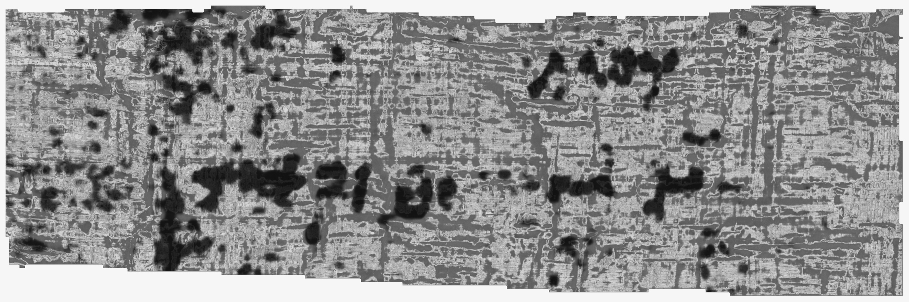
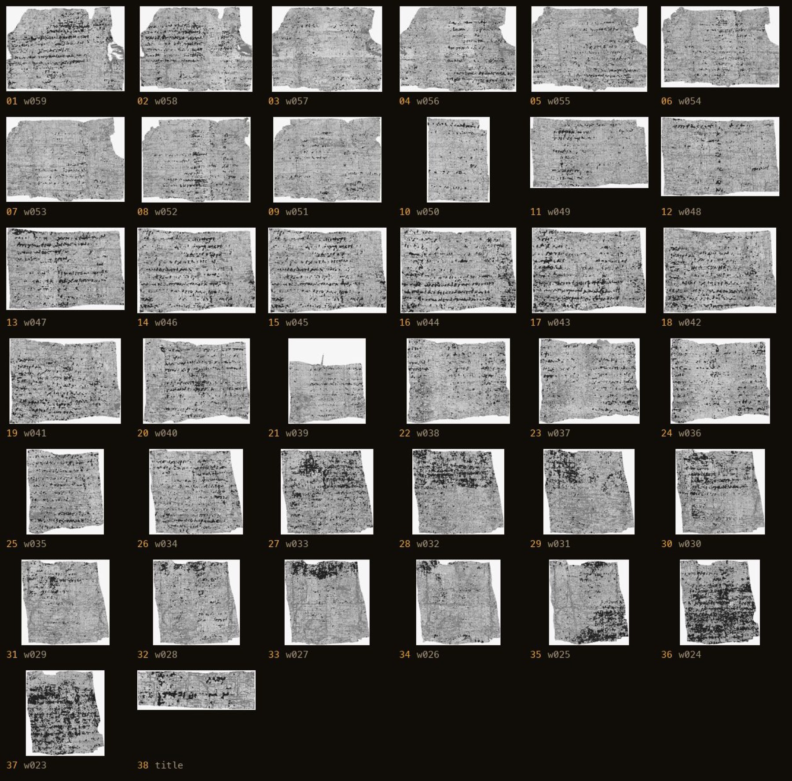
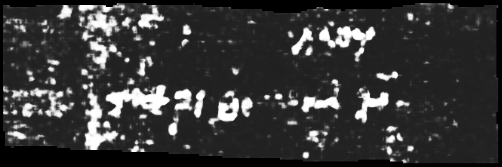

Look inside without touching it.
A high-resolution CT scanner captures the scroll as thousands of X-ray slices, like a medical scan with far more detail.
 Case study
Case studyThis collection is private for now. Enter the password to view.
Back to portfolioThe Vesuvius Challenge · Independent research · Ongoing
The Vesuvius Challenge is an open competition to recover writing from ancient scrolls carbonized by Mount Vesuvius in 79 CE. They are too fragile to open. I am building a research system to read them without touching them.
See how it worksThe challenge, in plain English
Nearly two thousand years ago, the eruption turned a library of papyrus scrolls into brittle blocks of carbon. Pull one apart and it can disappear. So researchers use X-rays and software to look inside, separate the crushed layers, and search for ink that the human eye cannot see.
Recover at least ten readable characters from one unopened scroll, with enough physical evidence for an expert to believe they are real.
A high-resolution CT scanner captures the scroll as thousands of X-ray slices, like a medical scan with far more detail.
The scan is reconstructed into a three-dimensional scroll. One warped sheet is traced and digitally flattened into a readable surface.
Carbon ink and carbonized papyrus look almost identical. A model searches for tiny physical differences hidden in the scan.
A plausible letter is not enough. It must survive false-positive tests and map back through the flattened surface to the exact place in the original CT scan.
The first attack
On August 18, I ran released ink models across surfaces from an unopened scroll. Different models lit up the same places. That looked promising.
Then I looked closer. The “letters” were seams, fibers, edges, rings, and the natural texture of papyrus.
Several models can agree
and still be wrong.
The pivot
I started asking a harder question: “What would prove that it is not one?”

Before claiming a new discovery, I connected published Greek text back to exact pixels, the flattened surface, and the parent CT scan.
Learning through closure
These were not discarded attempts. Each one removed a tempting explanation and left behind a stronger test.
The first training treatment used 82 examples of papyrus texture that had fooled the model. It made false positives worse everywhere, so I retired it instead of tuning around the result.
What it taught meA small pile of “bad examples” can move the entire model in the wrong direction.
I tested whether a simple brightness and contrast correction could close the gap between scrolls. The production pipeline effectively erased the change.
What it taught meThe remaining problem was not a simple image-calibration mismatch.
A self-supervised 3D model looked useful, but the published training history and physical geometry could not support the clean comparison I needed.
What it taught meA sophisticated model cannot rescue an experiment whose inputs cannot be traced honestly.
I built storage, distributed compute, watchdogs, receipts, and hundreds of tests before obtaining a meaningful scientific metric. The system was safer, but the question had disappeared.
What it taught meReturn to one causal question and the cheapest test that can kill it.
Building a research organization
I turned the work into a small autonomous research cohort. Six specialized agents can investigate, build, challenge, monitor, and govern an experiment, while I remain the sole orchestrator and approval gate.
Chooses the question worth answering.
Builds the experimental machinery.
Hunts for defensible unread signal.
Attempts to break every claim.
Monitors new data and prior art.
Controls compute, permissions, and spend.
Proving the known world
On a scroll whose text had already been published, the system traced 51 known characters across four separate wraps all the way back to their exact locations inside the CT scan.


The key discovery
It was where the model chose to see ink at all.
In plain English: known text regions were not brighter. They were covered by more small ink predictions. That narrower behavior survived every frozen test and became the first foundation-grade signal in the program.
The unread strike
Six surfaces from unopened scroll PHerc1447. No tuning after seeing the data. No intensity shortcuts. Every candidate had to be letter-sized and beat a chance comparison.
The known-text signal did not transfer into defensible letter-shaped structures on this tranche. That is not a discovery claim. It is a clean boundary around what the current model can do.
Where the work stands
The Vesuvius work is still running. There is no victory lap here. The result so far is a research system that knows more precisely what it knows, what it does not, and what it must prove next.
Known writing can be traced from a published image to a flattened surface and back into the original CT volume.
The model distinguishes known-text regions through where it predicts ink, not stronger prediction intensity.
The first frozen PHerc1447 reconnaissance returned no candidates above chance.
The cohort must decide whether to test a new training hypothesis or acquire better-provenanced scroll surfaces. That decision is intentionally not frozen yet.
Status verified August 29, 2026. The case study will evolve with the research.
Ongoing excavation
The job is not to make the signal look convincing. It is to build an instrument worthy of believing it.
Back to selected work